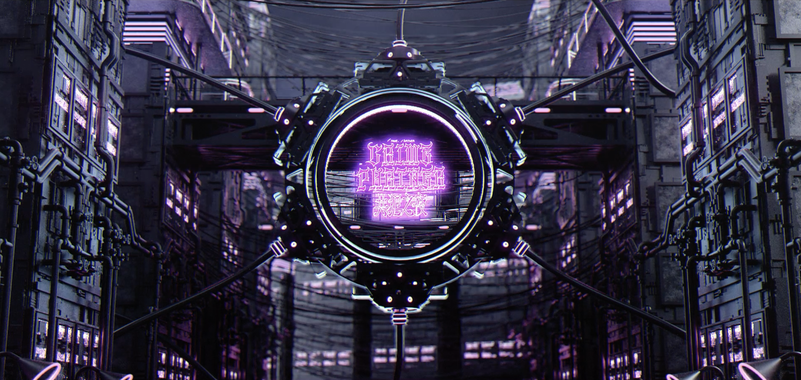
01 · 2025
Crime Partner 1.0
CP culture. Cosplay. Valentine’s after dark.
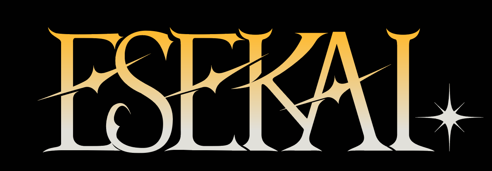
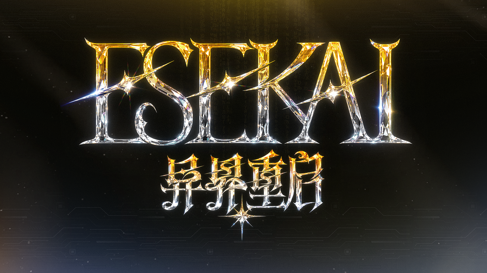
NYC EVENT STUDIO · FANDOM / NIGHTLIFE / CULTURE
ExploreHover to play · Tap the speaker icon for sound
Original nights for anime and game fandoms.

CP culture. Cosplay. Valentine’s after dark.
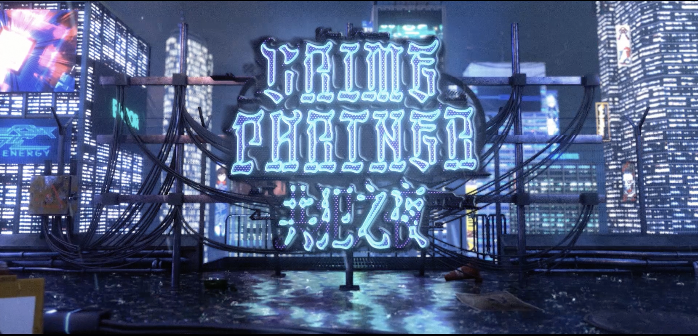
The format returns, rebuilt from audience feedback.
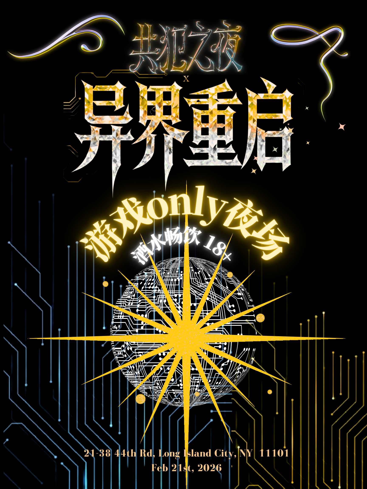
Game fandom, with a Lunar New Year twist.
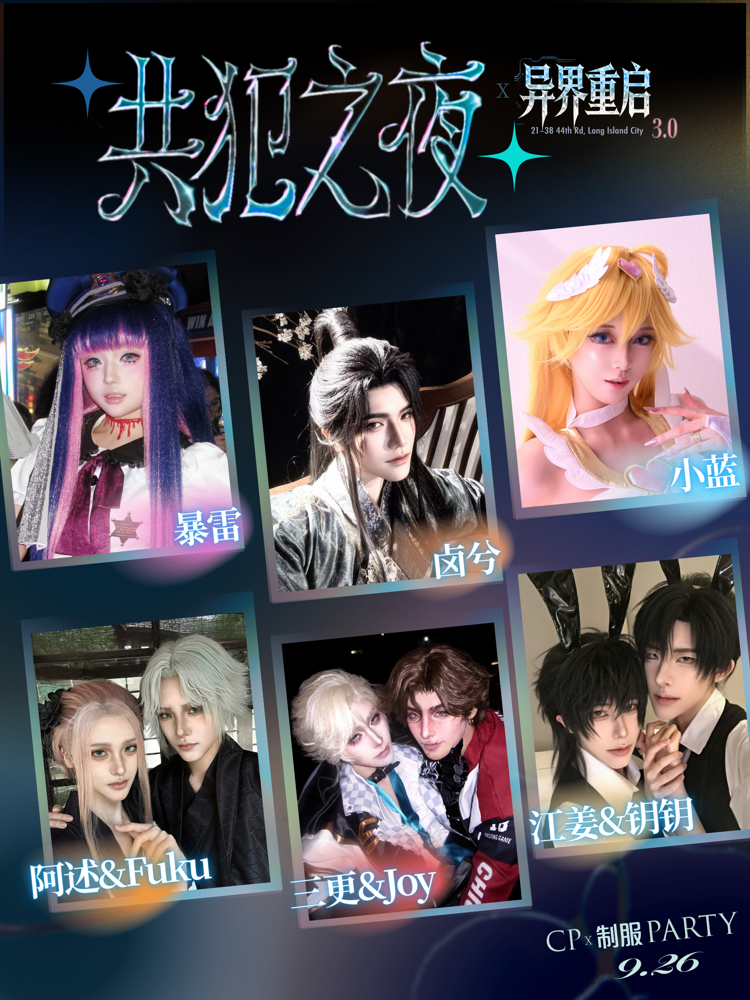
CP × Uniform. Anime × Games.
A new format. Details soon.
Design for Fandom.Design for Nightlife.
Creative Direction · Campaign · Brand ActivationESEKAI is a New York event studio creating original nights for Gen Z anime and game communities.
We connect fandom with nightlife, and welcome brands, venues and partners into the experience.
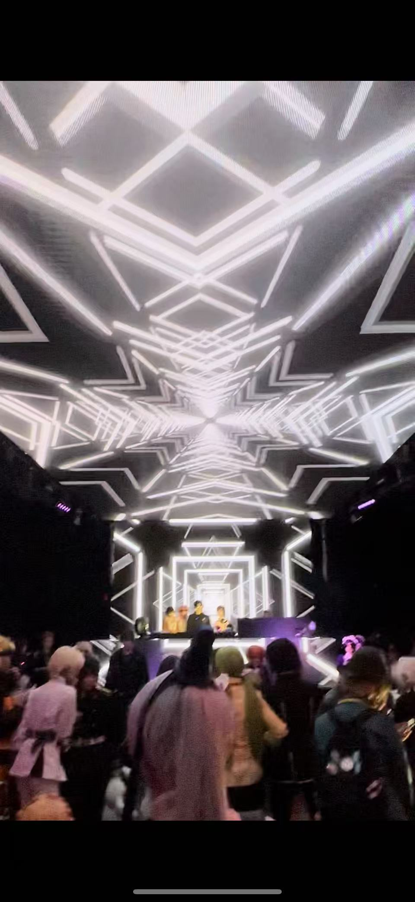
Long Island City, New York · February 15, 2025
A women-only Valentine’s night bringing CP culture, cosplay and anime fandom onto a New York dancefloor.
Shared characters. New connections. Guests joined performances, playful interactions and a dancefloor built around the fandoms they love.
Keep a busy, high-energy club night feeling personal, even as the room filled beyond our expectations.
We brought guest interactions, audience-led stages and social games together in an intimate setting, using lighting and programming to invite participation.
110+ tickets. The first Crime Partner established a recurring series, with audience feedback shaping the next edition.
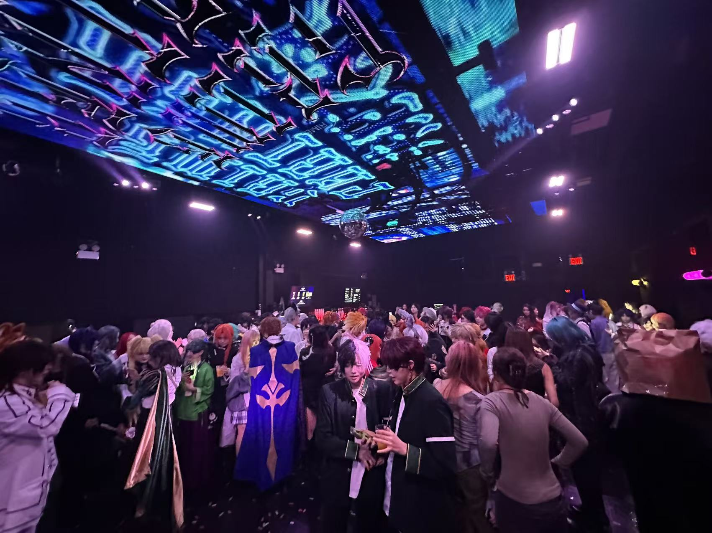
Long Island City, New York · October 18, 2025
The CP nightlife series returns, keeping its intimate core and building on feedback from the first night.
Guest-led interactions, community performances and shared dances brought the room together again.
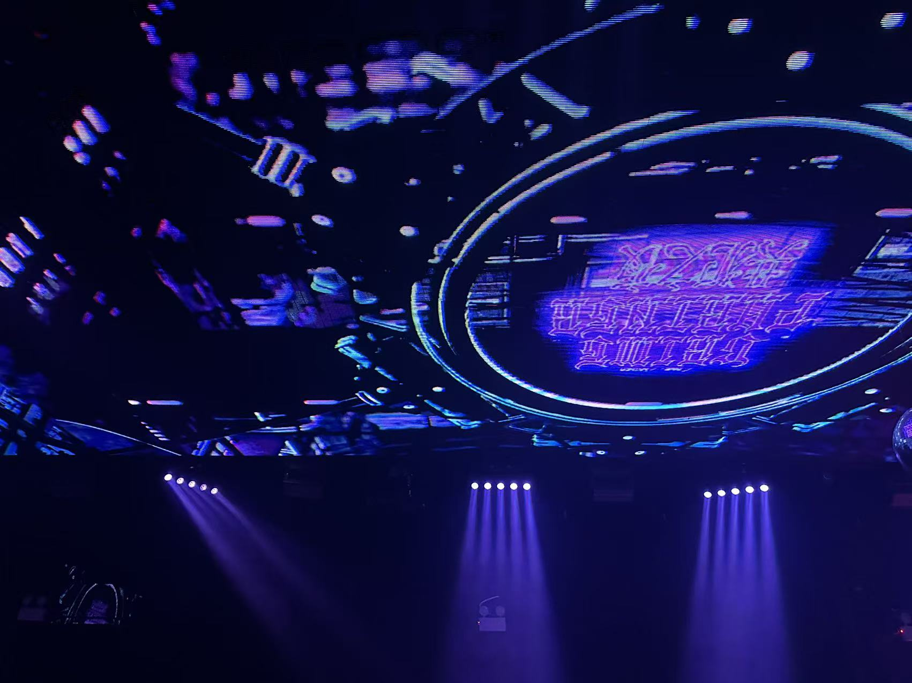
Keep a multi-part live program flowing in a loud club environment, with visuals and guest interactions landing at the right moments.
We refined games and the guest experience through audience surveys, strengthened team communication, and closely coordinated live visual cues.
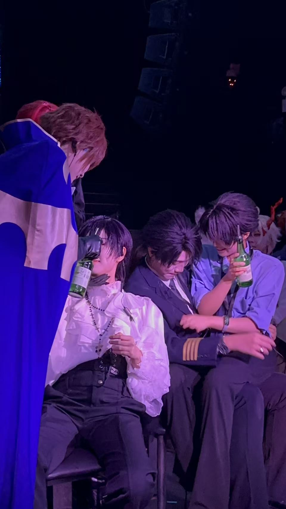
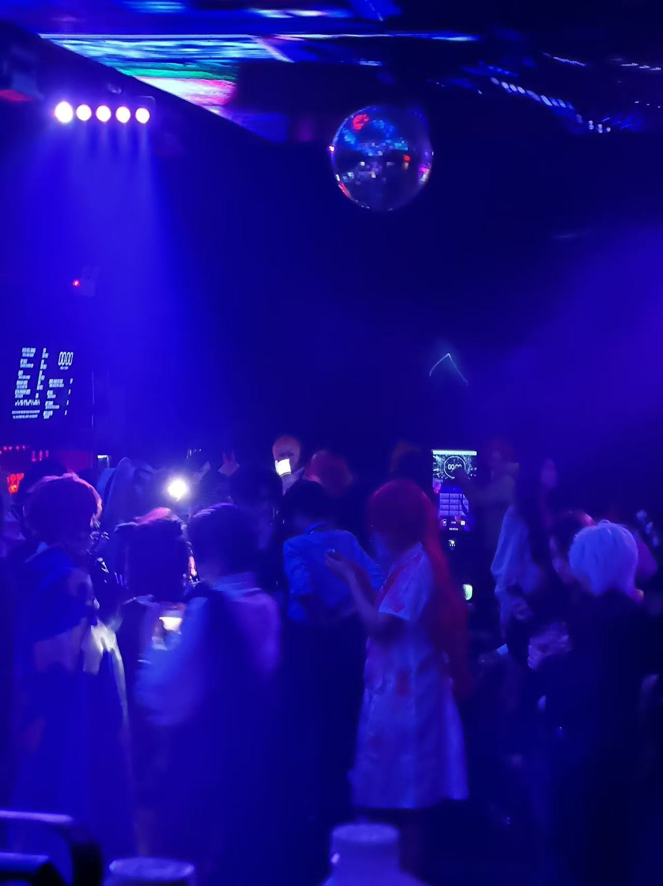
Around 120 tickets. A second edition that carried the series forward, and informed the next evolution of ESEKAI’s nightlife programming.
Long Island City, New York · February 21, 2026
A game-focused IP for players to step out of their screens and into a shared night of cosplay, performance and connection.
Game characters met the dancefloor. Lunar New Year staging and community performances gave this edition its own festive identity.
Move beyond a CP-led theme and create a night that speaks to players across different game fandoms.
We built the programming around games and encouraged guests to arrive as their favourite game characters or NPCs, with a Lunar New Year twist.
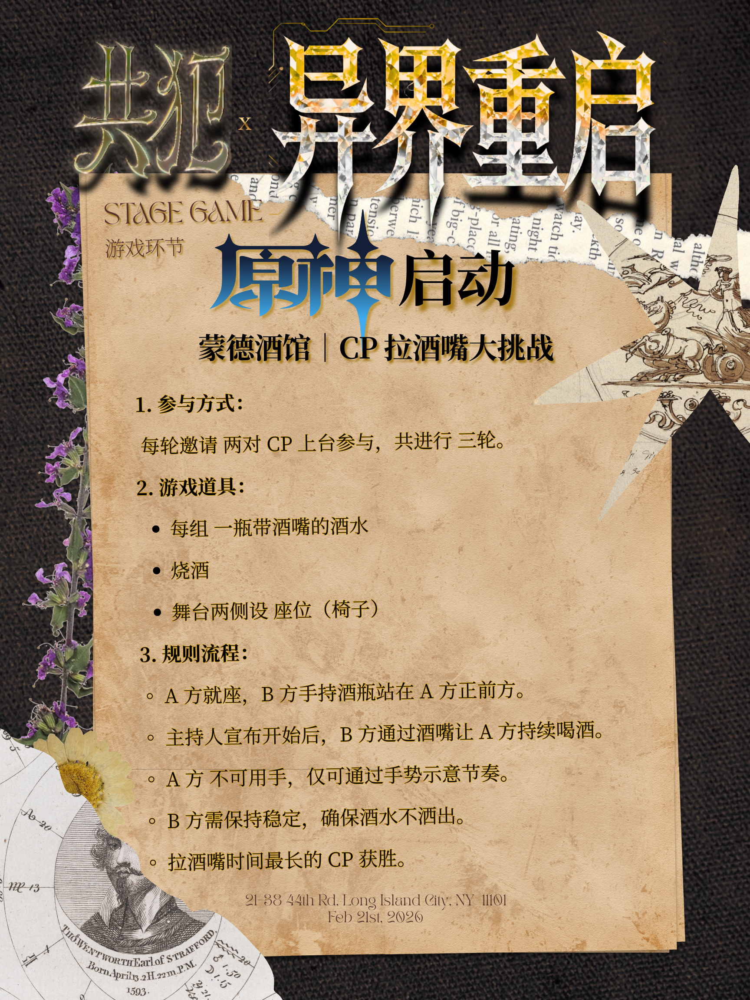
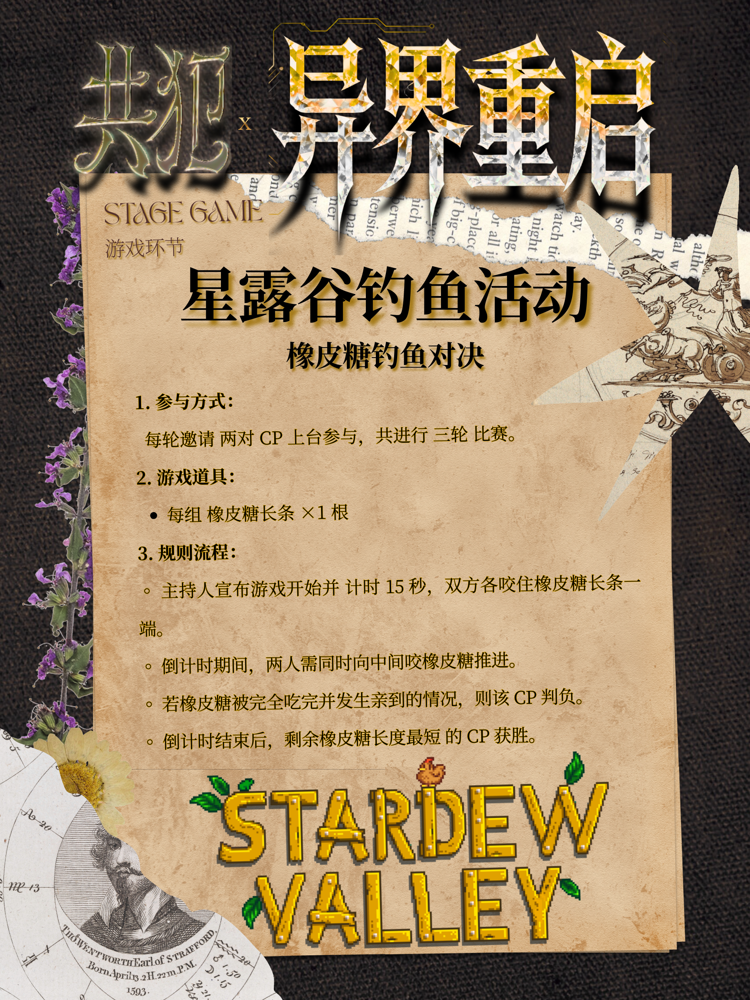

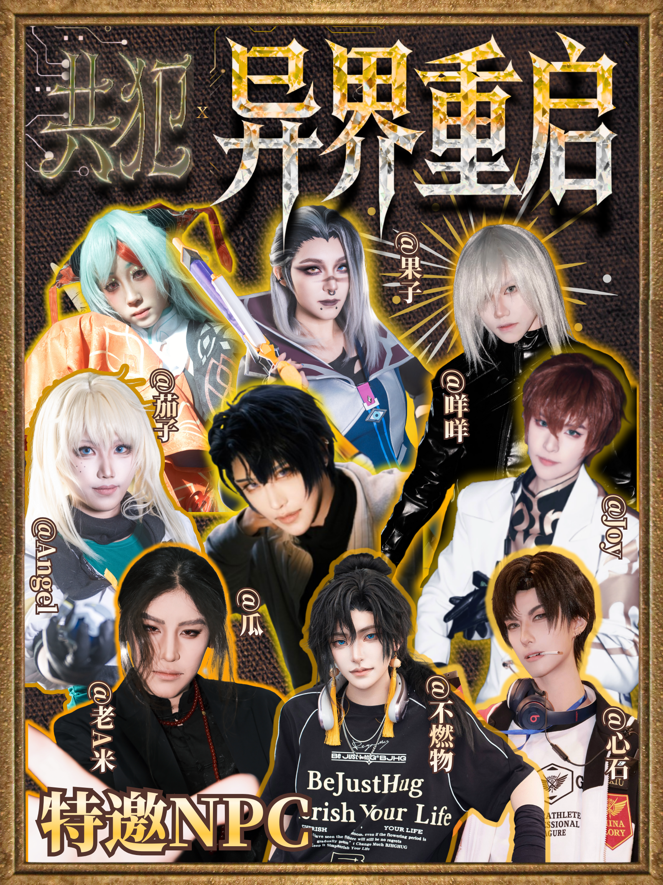
The response to game-themed nightlife inspired us to bring Respawn into Crime Partner 3.0—connecting anime and game fandoms in the next chapter.
Long Island City, New York · September 26, 2026
CP culture meets game fandom. Our next night brings the two IPs together with a uniform-inspired theme.
Come as a pair. Come as your favourite game character. The next chapter makes room for both.
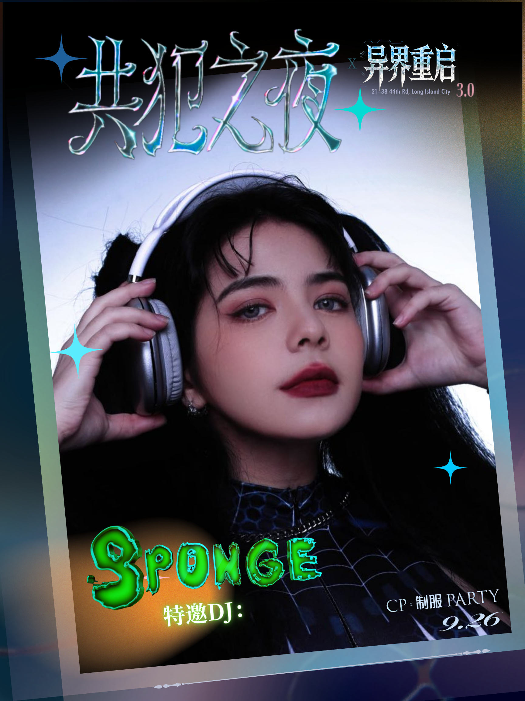
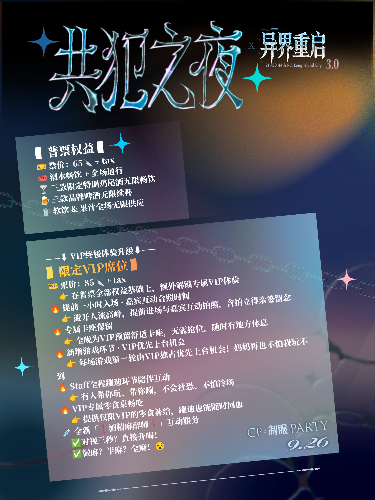
The full case study, event photography and audience response will follow after the night.